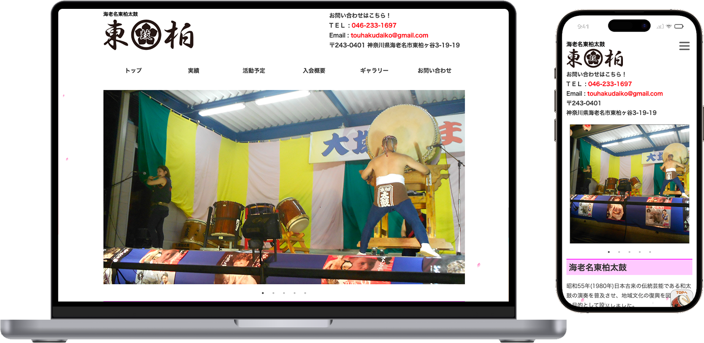

01. 個人受注案件
東柏太鼓教室 公式Webサイト 新規制作
旧サイト閉鎖に伴う、公式Webサイトのゼロからの再構築。前職の経験を活かし、クライアントと「現在発信すべき情報は何か」を一から整理する要件定義から参画しました。幅広いターゲット層に向けた迷わせない情報設計と、手戻りを防ぐ綿密な進行管理を徹底。さらに「和」を演出するマイクロインタラクションを実装し、教室のブランディングに貢献しました。
使用ツール：HTML / CSS / JS / Photoshop / Visual Studio Code